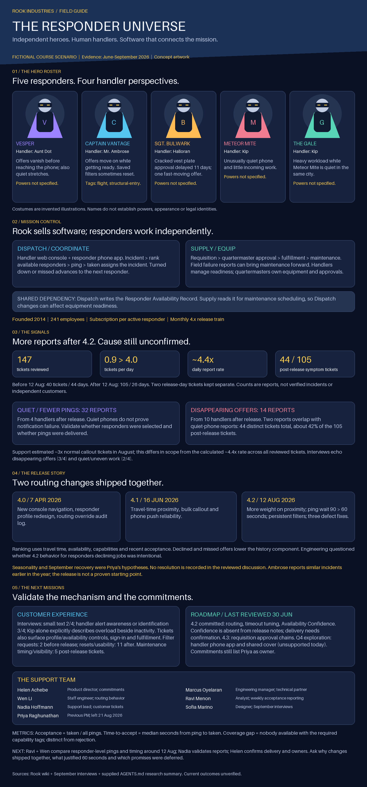

<!doctype html><html lang="en"><meta charset="utf-8"><meta name="viewport" content="width=device-width,initial-scale=1"><title>Rook: The Responder Universe</title><style>body{margin:0;background:#0b1124;color:#f4f6ff;font:18px system-ui}main{max-width:1800px;margin:auto}img{width:100%;height:auto;display:block}nav{padding:24px;display:flex;gap:24px;flex-wrap:wrap}a{color:#ffcf49}</style><main><nav><a href="https://app.notion.com/p/About-Rook-3eac8516f50181afbc4de9d8ff334082">Company overview</a><a href="https://app.notion.com/p/83a83da875364a1ab725d914482fad35">Customer interviews</a><a href="https://app.notion.com/p/4-2-3eac8516f50181499fc4c5cf15c1ace7">4.2 release discussion</a><a href="https://app.notion.com/p/950ebd7431764f11b6dc1cc13378dca2">Q3 roadmap</a></nav></main></html>